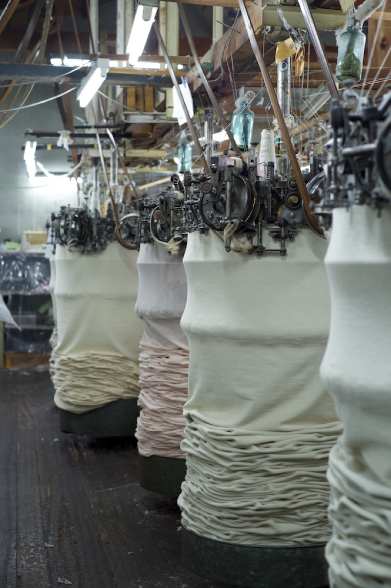
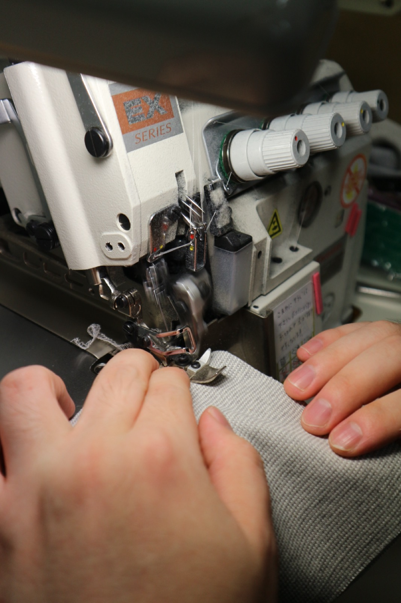
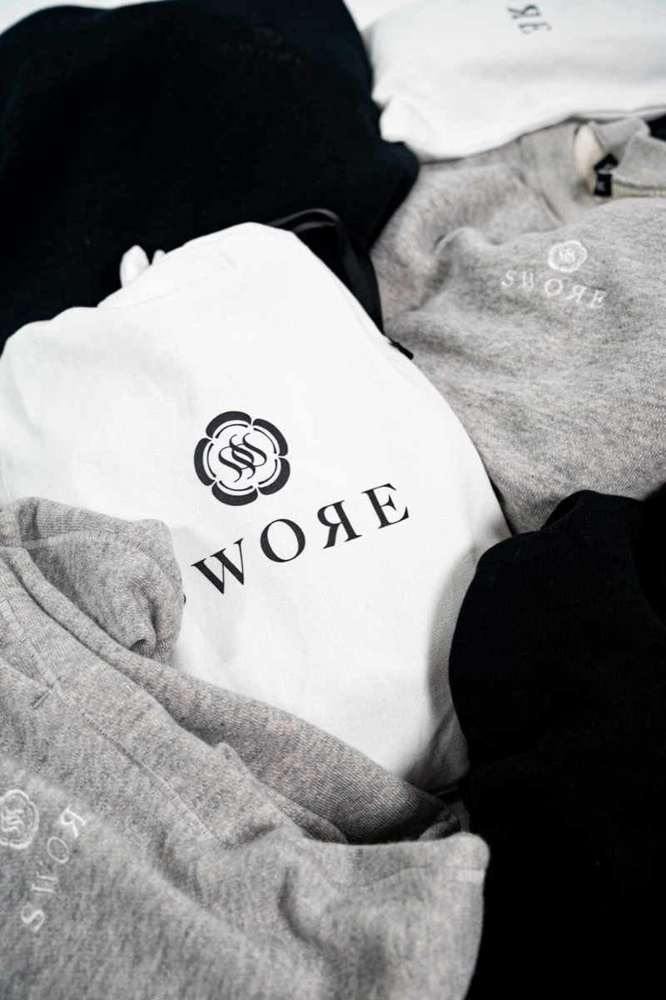

吊り編み機は、百年以上前から使われてきた編み機です。
現在主流の丸編み機と異なり、生地を吊り下げながら編むため、糸に余計なテンションがかかりません。
従来の編み機が1時間に数十メートルを編む一方で、吊り編み機は約1メートル。その遅さが、空気を含むようなやわらかさとふくらみを生み出します。
現存する機械は数少なく、扱える職人も限られています。
SWOЯEは、この機械で編まれた生地のみを使います。

熟練の職人の手と国内唯一の特許縫製技術によって、ミリ単位の狂いもなく、一枚の服へと仕立てられていきます。
目指したのは、長期所有を前提とした完全Made in TOKYOのプロダクト。
肌に触れた瞬間の静かな安心感と、着込むほどに身体へ馴染んでいく風合い。言葉や装飾よりも雄弁に、生地の重みと針目の美しさ。

速度ばかりを求められ、早く結果を出そうと自らを無理に引き伸ばせば、表層は整っても、その内側には張り詰めた緊張と脆さが残ってしまう。急がず、土台を飛び越えず、自らの重みを受け止めながら時間をかけて積み重ねたものだけが、やがて誰にも奪われない静かな強さへと変わっていくのだと思います。
効率や早さの先にはない、本質的な温もりを。非効率の中にある豊かさを。消費されるための服ではなく、あなたの奥底に永く寄り添い続ける一着のために、SWOЯEはこの誠実な歩みとともにものづくりを続けています。